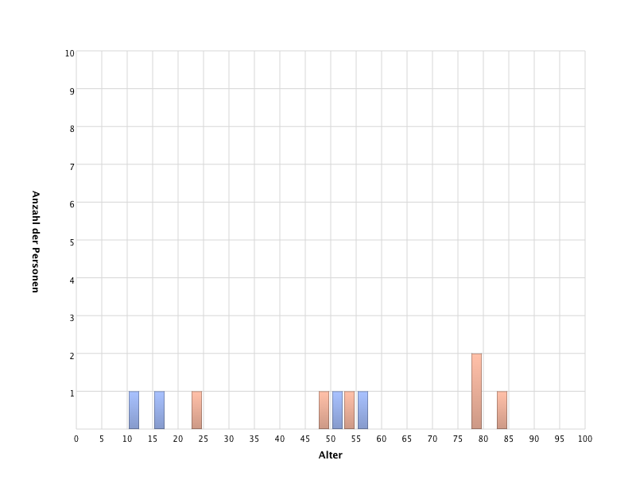
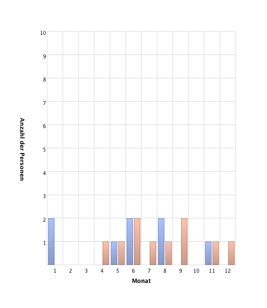
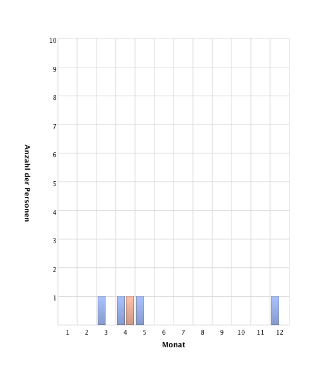
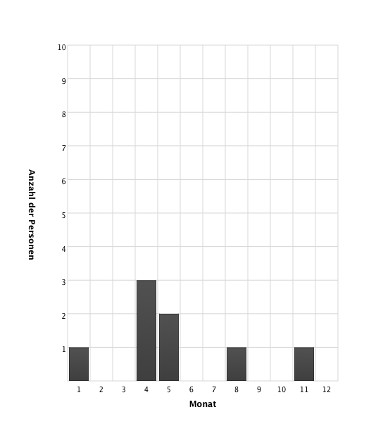
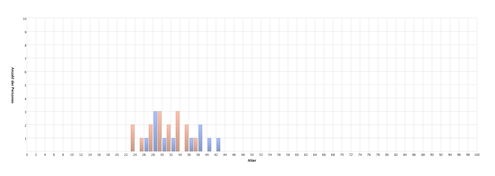
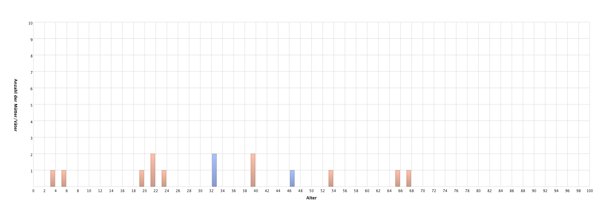
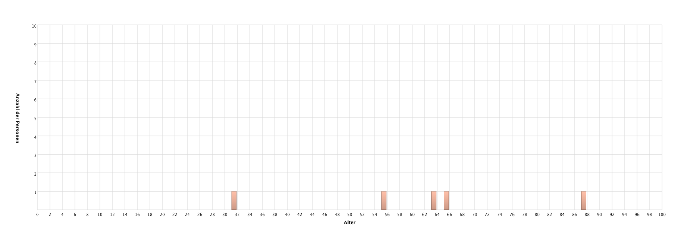

Statistiken
Personen
| Anzahl der Personen |
87 |
| Männliche Personen |
40 |
| Weibliche Personen |
47 |
| Personenereignisse |
39 |
Familien
|
|
| Anzahl der Familien |
35 |
| Verheiratete Familien |
19 |
| Geschiedene Familien |
0 |
| Familienereignisse |
20 |
Zeit & Datum
|
|
| Frühestes Datum |
9.8.1815 |
| Letztes Datum |
3.2009 |
Statistikdiagramme
Alter von noch lebenden Personen

Monat des Geburtstages

Monat des Sterbetages

Monat des Jahres bei Heirat

Alter der Eltern bei Geburt von Kindern

Alter der Kinder bei Tod eines Elternteils

Alter einer Person zum Zeitpunkt des Todes des Partners

Zeit zwischen Geburt eines Kindes und der Heirat